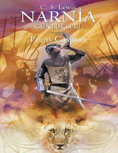

PCTo'rt bola yana Narnia olamiga qaytib, yangi sarguzashtlarga sho'ng'iydi.
Bu kitob C. S. Lewisning mashhur 'Narnia Yilnomalari' seriyasining bir qismi bo'lib, Prens Kaspian haqidagi sarguzashtlarni hikoya qiladi. Peter, Susan, Edmund va Lucy ismli to'rt bola yana Narnia olamiga tortiladi va yangi maceralar ularni kutmoqda. Kitob turk tiliga tarjima qilingan bo'lib, Doğan Egmont nashriyoti tomonidan chop etilgan.